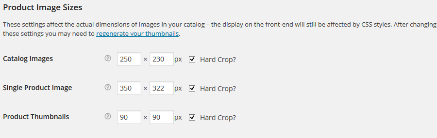

Agrofields
Wordpress Theme
- latest update: December 5th 2014
- by: CMSMasters Studio
- Official website: http://cmsmasters.net/
All the support is provided via personal tickets. To submit us a ticket please fill in the form: http://cmsmasters.net/support/
Agrofields Wordpress Theme is amazing. Unlimited design solutions can be created due to a great flexibility of settings and shortcode options. 99+ Custom Shortcodes are added through a Visual Content composer with drag'n'drop function. You can set a completely custom layout that stretches to any width, set your content in many columnns and assign animation many parts of your content. Agrofields theme has a Portfolio that can be set to any sort of a grid or a Masonry puzzle with variable paddings for elemens, while Blog can have several different layouts too. Custom Profiles and Projects post types offer an optimal way to present your content, while valid code, SEO-optimized structure and microformats guarantee this content is easily crawled and indexed by search engines.
Agrofields comes with a Custom Mega Menu plugin, a really functional Form Builder and premium Revolution and Layer Slider plugins included for free. Multilanguage, RTL-ready, plugin-compatible and professionally-supported theme will make every day you work with your website be a Agrofields!
Install Your Theme
Before installing the theme, you need to install WordPress (see details here). Once you have installed WordPress and logged in to admin panel, you can install Agrofields theme.
Important!
After you have installed WordPress, find the htaccess.php file on your server, please open it and add (to the very end of the file) the following code:
php_value post_max_size 16M php_value upload_max_filesize 16M php_value max_file_uploads 32M php_value max_input_vars 5000
This is needed for many parts of theme functionlaity to function correctly. Please make sure you do this BEFORE installing and activating the theme, if you are installing it via Admin panel, and always BEFORE uploading any demo content.
There are two ways to install the theme
- Upload via WordPress admin panel.
- Upload via FTP directly to your server.
Once your theme is installed, you will be able to customize it by yourself from scratch, or use our Demo Content (see more about it in the relevant chapter).
1. Upload the theme using WordPress admin panel
To upload theme using WP admin panel, please proceed to Appearance > Themes.

Choose “Install theme”

Click “Browse” and choose the Agrofields theme archive on your computer, then click “Install Now”.
Important!
Please make sure you are not choosing the entire theme archive you have downloaded from Themeforest, you should use only the theme archive - agrofields.zip.
Note: To perform the requested action, WordPress needs to access your web server, so when you'll get to uploading the theme, please enter your FTP credentials. If you do not remember your credentials, you should contact your web host.
Once the installation process is finished, click “Activate”.

2. Upload theme via FTP
To upload your theme to via FTP, you need to unzip and copy all the files from “agrofields” folder to wp-content/themes/agrofields directly on the server (use only lower case letters!).
After you did that, Agrofields theme will be available for activation in WP admin panel: Appearance - Themes. Activate it by clicking “Activate”.
Note: before activating disable all your plugins.
For correct functionality, please, make sure that you consider all of the following:
- There are NO NESTED FOLDERS like:
/wp-content/themes/agrofields/agrofields.
A correct path will look like:
/wp-content/themes/agrofields. - You SHOULDN'T copy entire theme archive you have downloaded from Themeforest to your server - only unzipped agrofields.zip.
- DO NOT rename the theme on your server. Theme names like /wp-content/themes/agrofields1 or any other are INAPPROPRIATE. Please make sure the theme folder is called themes/agrofields.
- Use only lower case letters.
If you've faced an error in the process of theme activation, please, make sure you have followed our instructions carefully. Your server settings may restrict some theme features, so you can try contacting your hosting support for help. If the issue persists, disable all plugins and try again.
In any case, please feel free to contact our support guys, they will help you with theme installation or guide you on what the problem can be - http://cmsmasters.net/support/
Adding Plugins
Your theme archive comes with several plugins.
- CMSMS Visual Content Composer
- CMSMS Contact Form Builder
- CMSMS Mega Menu
- iLightbox
- Revolution Slider
- Layer Slider
- WooCommerce
Important:
to get full theme functionality please make sure you always DO INSTALL:
- CMSMS Visual Content Composer
- CMSMS Mega Menu
- iLightbox
Also important:
if you are planning to upload Demo Content that comes in the theme archive, you need to INSTALL ALL PLUGINS!!!
Other plugins are alternative to use, but we do recommend also using the CMSMS Contact Form Builder (lets you create great contact forms). You can as well use one or both sliders to add a slider to your website.
Use WooCommerce plugin if you need to sell your products online.
After your theme is installed and activated, it will remind you about installing the required and recommended plugins. You will see the following notice across your Dashboard:
To install the plugins you can either click a "Begin installing plugins" link in this notice, or proceed to Appearance - Theme Plugins
After you have installed and activated a plugin, it will disappear from this admin page, but will appear in the Plugins Tab:
Important:
you should have "777" access settings for the wp-content folder before installation.
You can change these permissions back to 755 when the installation is finished.
You can do it using your FTP client - Filezilla, FireFTP, etc. - or hosting C-panel.
Open a drop-down menu by clicking the right mouse on the folder, specified above.
Choose there "access rights" (or maybe something similar - depends on your FTP client) and make changes.
Don't apply this action for the subfolders and nested files.
Please don't set the "777" permissions "agrofields" folder for security reasons. Also please change the permissions for "wp-content" folder back to 755 when you are done.
Setting up Woocommerce
After you have activated the WooCommerce plugin, please proceed to Woocommerce - Settings - Products and scroll down to image settings. If you want your Woocommerce images look like on our demo preview, please set the following parameters as shown below:

Woocommerce is a free plugin, so you can easily update it if needed in your Plugins section in your WordPress Dashboard. Also, all the questions regarding using Woocommerce functionality are covered in Woocommerce Documentation, which is very detailed.
READ WOOCOMMERCE DOCS
Upload Demo Content
Important:
Before uploading Demo Content please make sure you have installed and activated ALL 6 PLUGINS that came with the theme. You may reference "Plugins Installation" section of this guide for more information.
To add a Demo content you need to install WordPress Importer plugin.
In your admin panel proceed toTools - Import
And then choose WordPress Importer tool:
Important:
You should have "777" access settings for the wp-content folder before this plugin intallation.
Otherwise your demo content won't be installed.
You may change these permissions back to 755 when the installation is finished.
You can do it using your FTP client or C-panel. See how to set the permissions in more details in Plugin Installation section.
Step One - Import the Content Itself:
Demo Content files can be found in the archive you have downloaded from Themeforest. Open the DEMO CONTENT folder, then choose one of the demo websites from which you would like to import settings and content. Each of the folders will include a .xml content import file, a .txt theme settings file and one or more slider import files.
First please proceed to Tools - Import and choose Wordpress Importer, then browse for the .xml demo content file on your computer and click the Upload button:

Please make sure to mark the checkbox as shown on the screenshot below, then click "Submit":
Don't close this browser tab until the installation is finished. Be patient - it may take few minutes.
The WordPress Importer plugin, which adds DEMO content, adds content only - i.e., posts, pages, menus, images. It will not import Theme Settings. Theme settings will be imported separately in the second step.
Note:
1. Demo content adds all the posts and pages just like we have on our demo site, but all the images are substituted with placeholders. Our license does not allow us redistribute images, but quite sure you will find tons of great images on photodune.net - Visit Photodune Now.
2. After you have imported Theme Settings and Demo Content, you need to choose your homepage and your navigation (see instructions for both below).
3. Should there be any difficulties or questions, please feel free to contact our support, we are always glad to help you - http://cmsmasters.net/support.
Step Two - Import Theme Settings:
Now you can import theme settings, as they are different for all demo sites. In your theme archive see the DEMO CONTENT folder and open the folder, you want to use content from. Then open the .txt file with the theme settings. Copy all the code in this file:
Now proceed to Theme Settings - Import/Export - Import tab and paste the code you have copied into the field provided, then click "Import Settings" button:
Step Three - Choose your Home Page and Navigation:
To set your Home Page please proceed to Settings - Reading and set a Static Page as a home page, then use a drop-down to find and assign a specific page. You should choose "Home":

You also need to assign your navigation. The menu was already imported to your website, but you just need to set it in Appearance - Menus - Manage Locations. Choose Main Menu as Primary Navigation and save changes. There might also be a need to assign other menus too, if they are present on the website you are replicating.

Step Four - Import Sliders:
The final step to replicate a demo site will be importing the sliders. The sliders import files are included in the archive you have downloaded from Themeforest in a Demo Content folder:
Some of the demo sites can have both Layer and Revolution fles to import, some may have only one of them. In any case, you need to the .zip archive that is located inside.
To import slider demo content you need to proceed to the slider tab on your admin panel and import the .zip file. See a screenshot for the Layer Slider import:

See the same procedure for Revolution Slider:

Note:
1. Please make sure you are using a corresponding import archive.
For instance, use a file from a LayerSlider folder to import in Layer Slider plugin and a file form a Revolution Slider folder to import into a Revolution Slider .
2. Please note that the slider import file will import all slider settings, slides, layers, captions and animation effects, but with all images substituted with placeholders.
3. Should there be any difficulties or questions, please feel free to contact our support, we are always glad to help you - http://cmsmasters.net/support.
Appearance Settings
Agrofields theme provides really flexible appearance settings.
One of the main features, are Color Schemes.
1. Color Schemes
Color Schemes allow you create preset color solutions that subsequently can be applied when editing your website content, like menus, various shortcodes etc.
Color schemes can be set up and edited In Theme Settings - Colors tab in your admin panel.
Initially the theme comes with the 9 schemes (but you can add more, we will get to this below in this section), which are:
- Default - applied to most of the Body content, unless other is specified
- Header - applied to Header, but can be used for other website sections as well
- Header Top - applied to Header Top Line, but can be used for other website sections as well
- Footer - applied to Footer, but can be used for other website sections as well
- Custom 1 - is used for various elements upon your choice
- Custom 2 - is used for various elements upon your choice
- Custom 3 - is used for various elements upon your choice
- Custom 3 - is used for various elements upon your choice
- Custom 4 - is used for various elements upon your choice
Please see the screenshot:
Each color scheme offers a list of options, that altogether make a really flexible design instrument. For instance, any of your pages can be created of several sections, and a unique color scheme can be assigned to each section.
Add More Color Schemes
If you feel like these 9 schemes are yet not enough for you, you can easily add more custom color schemes. For this please proceed to Appearance - Editor and choose Theme Functions to edit functions.php file.
Then scroll to where it says "Theme Settings Custom Color Schemes" and copy one of the lines to place it right below the other ones, then rename it. After you save the file, your new color scheme will be available for editing in Theme Settings - Colors. See the screenshot:
2. Font Settings
All website font settings can be edited in Theme Settings - Fonts tab. you can find settings for general content, links, navigation, headings and some other elements. To customize your website appearance, just play around with the font settings, or leave theme default if you wish. See the screenshot:
Yet, Agrofields theme allows you to add any of hundreds Google fonts and se them on your website. Just follow a guide below
Add more google Fonts
For this please proceed to Appearance - Editor and choose Theme Functions to edit functions.php file.
Click to edit the file and scroll to where it says:
// Theme Settings Google Fonts List
See the screenshot:
Note: Please be attentive and do not use the Theme Settings System Fonts List instead - you can not load any Google font to this list.
You should add a new font to this list manually.
To paste it you should get the details from here:
Don't forget to choose your font style and character sets:
Copy this code:

It's Monda:400,700&subset=latin,latin-ext' in our example.
Paste it to the code so it looks like this:
Important: Important: if the font you are using has only one weight value, for instance - 400, the given by Google code will not list this value, in this case you need to add the weight value to the code you are adding manually. See an example for Fenix font:
The offered code for it will look like this:

Instead of adding only: Fenix&subset=latin,latin-ext
you need to add: Fenix:400&subset=latin,latin-ext
Website Background
You can set background (color or image) for the whole website, but only if Boxed layout is enabled. Boxed layout can be enabled in Theme Settings - General tab:
If Boxed layout is enabled, Background tab will appear in Theme Settings - Appearance. There are various options available for background, you can set color or image, as well as set preferences to your image performance:
Other Settings
There are other appearance settings in your theme, like responsiveness settings, layout settings etc. You can as well enable preloader for your website. See the screenshot:
Also, please read more about settings available for you Header, Logo, Navigation etc. in the corresponding sections of this guide.
Header, Footer, Logo & Favicon
In Theme Settings - Appearance tab you can manage some major appearance settings. For instance, you can add a Logo and Favicon images.
Please note: for superior performance on Retina displays, logo image is added in two sizes. It is recommended that you add an image for Retina logo twice larger than your default logo.
Menu Setup
Menus are managed in your Admin Panel in Appearance - Menus tab:
Here you can add menus or change the existing ones, as well as assign them as a primary or additional navigation. To add a menu:
To edit the existing one choose it from a drop-down and click "Select":

Important:
If you have imported Demo Content file, and your menu will look overcrowded with tabs, and it will display all the pages, present on you website. To fix this you need to assign the main menu as Primary Navigation:
To add pages to your menu you need to choose the needed page first and then click "Add to Menu":
To rearrange the existing elements you can simply drag and drop them to the place you need.:
Menu Color Options
Agrofields theme allows you edit colors for each menu item. Here you can play around with Highlight and Color settings to get the needed results. In any case, always feel free to contact our support for help.
Mega Menu Options
Agrofields theme comes with CMSMS Mega Menu plugin. Please see Plugin Installation section for installation and activation instructions. Once your plugin is active, you will be able to use Mega Menu options for your menu.
You can enable Mega Menu options for any top-level element of your menu:
For top level Mega menu elements you will be able to define an amount of columns for the drop-down elements to be arranged into.
You can use first sub level Mega Menu elements to arrange your links into columns that have their names. You can as well use appropriate checkbox to hide column title. You can either have your column lead to a specific page, or simply remove the URL:
Please note:
Color settings will be applied to column names only if highlight is enabled.
Finally second sub level menu elements will be your actual links that are arranged into columns. You can as well add some text to Description field and enable a checkbox shown on the screenshot. In such a way you will have a text block inside your menu.
See what it will look like on the front end:

Please note:
Color options, like Highlight and Custom Color will not be applied to Text Block.
Visual Composer & Shortcodes
Visual Content composer is a custom content editor created by Cmsmasters Studio to provide ultimate functionality within a really easy and intuitive interface. Content Composer allows you easily drag-and-drop your content parts, combine them into groups and add formatting.
You can activate Content Composer on any page using a special button above yuor default editor:

As soon as you do, a whole list of shortcodes will appear:

Click any shortcode to add it to your page and be able to manage content. Please note that each shortcode is added in two wrapping elements - a Column and a Section. This is done to provide you mith wider customization possibilities.

You can add an unlimited amount of shortcodes into each Column. This is done to allow you group your content depending on similar formatting settings or simply convenience. To add more shortcodes to your column just us a "Plus" sign on its bottom and choose the needed shortcode in a popup window:

You can as well simply drag and drop any shortcode by pulling it with your mouse from one column to another:

There is a really easy way to set your content in columns - simply click on the needed layout in Section header. You can have different layout for each section on your web page:

Section & Column Special Options
Besides allowing you to edit shortocode content and its appearance settings, both wrappers - Section and Column provide you additional customization possibilities. You can apply customization to the whole section, as well as each column inside it.

For each column you can choose animation effect for your column to appear with when your website visitor loads the page or scrolls to this part of content, as well as delay for this effect to be applied with. There is also a field where you can assign additional classes to your column:

Sections provide really wide customization options, read a brief description of each option below:
- Merge With the Next Section
- This section will use all settings from the following section if this checkbox is marked. In this case there is no need to apply settings for this section, they will not take effect.
- Color Scheme
- you can assign one of the existent color schemes to you section. read more about adding and editing color schemes in an appropriate section of this documentation.
- Custom Background Color
- you can set a custom background color for each section separately. If custom color is not chosen, a default background color will be assigned.
- Background Image
- choose a background image for your section and apply settings for it. here you can position your image, choose repeat settings, add parallax effect etc. You can as well use a transparent .png image, repeat it as a pattern and the background color you have set for this section will be visible.
- Color Overlay Visibility
- you can enable color overlay for your section and set opacity for it. In such a way you can have a semi-transparent color overlay for the background image you have added for this section.
- Top & Bottom Paddings
- add paddings to leave some extra space between section content and section top and bottom.
- Content Width
- If you choose Boxed setting, all your section content will be arranged within width of 1160px;, while with a Custom setting you can set it be wider (up to fullwidth) or narrower.
- Section ID
- Apply a custom 'id' attribute to the section, so you can apply a unique style via CSS. This option is also helpful if you want to use anchor links (build one-page navigation) to scroll to a section when a link is clicked.
- Additional Classes
- You can add additional CSS classes (separated by spaces) to the section, if you wish to style content elements differently.
Widgets & Sidebars
You can use sidebars to add widgets. To access sidebars you need to proceed to Appearance - Widgets. You will find default sidebars and will be able to add widgets to them. Just drag the needed widget to the sidebar where you want to place it to:
You can as well add widgets simply by clicking on them. After you do, you will have a possibility to choose which of the default or custom sidebars, existent on your website, you want to add it to:
Your theme has 2 default sidebars: Sidebar (usually used as Right/Left) and Bottom Sidebar (is located above the footer).
Yet, you can add more sidebars that can be later on used in a Sidebar Shortcode anywhere on your page, or used as alternative Right/Left or Bottom Sidebar. You can add an unlimited amount of custom sidebars, please proceed to
You can enable any default sidebar or one of your custom sidebars on any website page in Theme Options section. You can find this section if you open any of your pages in your admin panel. Here you can assign any of the existing sidebars as Right/Left or Bottom sidebar. Also note, that for a Bottom sidebar you can choose a layout, depending on the amount of columns you want your widgets to be arranged into:
Yet, your theme provides additional options for adding sidebars to your pages. You can add any sidebar to any placeon your page by using a sidebar shortcode within your Visual Content Composer:

In a sidebar shortcode you will be able to choose one of the existent sidebars and select the needed layout.
Blog & Blog Posts Setup
To create a new blog post proceed to Posts - Add New:

Once there, you should add Post Title, choose one of the available Post Formats (see the screenshot), and then add the needed content. Please note, that Visual content Composer is available for blog posts too, simply click the large blue button to show it. You can read more about using the Visual Composer in the appropriate section of this guide. As soon as you are ready, click "Publish".
Assign taxonomies to your post - Tags and Categories. You will be able to use Categories to choose what posts should be displayed on a Blog page and in shortcodes like Post Types shortcode. Also add a Featured Image to your post.
Play around with theme options for your post to manage Layout, Heading, Background and some other options.

Adding a Blog Page
To add a new Blog page, just proceed to Pages - Add New and create a page. Then Click on the Visual Composer button and add a Blog Shortcode as shown on the screenshot. You can read more about using shortocdes and composer in the Visual Composer & Shortcodes section of this guide.
Now click on the shortcode in your editor to manage your Blog Page Settings. Here you can manage the way you want your posts to be presented and sorted, choose posts of a specific category to be displayed.
Pay attention to the Layout field - here you can edit your blog page appearance, making it to be a standard blog page, a timeline or a fancy column-based page with various options.
Portfolio & Projects
To create a Project proceed to Projects - Add New:
Once there, you can choose one of the available Project Formats (see the screenshot), and then add the needed content.

Then add you media content:
Pay attention at Project Size settings. Here you can define the dimensions, your project will take on Puzzle portfolio page. Also here you can manage Layout, Background and Heading settings.
Important:
As you can see, recommended dimensions for the images you upload are 580 x 460. You can use either images of this size, or larger images, but keeping the same proportion. Then the theme will cut your image on portfolio page according to dimensions set in Project Size. These settings work for Project Featured Image that can be added in the right column of your project editing page.
Assign taxonomies to your project - Tags and Categories. You will be able to use Categories to choose what posts should be displayed on a Portfolio page and in shortcodes like Post Types shortcode. Tags and Categories are also used for sorting and filter.
Also you can add Project Details, Project Link and Project Features. .
Adding a portfolio Page
To add a new Portfolio page, just proceed to Pages - Add New and create a page. Then Click on the Visual Composer button and add a Portfolio Shortcode as shown on the screenshot. You can read more about using shortocdes and composer in the Visual Composer & Shortcodes section of this guide.
Now click on the shortcode in your editor to manage your Portfolio Page Settings. Here you can manage the way you want your projects to be presented and sorted, choose projects of a specific category to be displayed.
Pay attention to the Layout, Layout Mode and Columns fields - here you can edit your portfolio page appearance.
Profiles Setup
To create a Profile proceed to Profiles - Add New:

Then add all the data needed for your profile:

Add Profile Info, Profile Features (up to three sets with custom names), and some other data depending on your needs:

Assign Categories to your profile. You will be able to use Categories to choose what profiles should be displayed on a Profiles page and in shortcodes like Post Types shortcode.
Also, add a person image in the featured image section:
Adding a Profiles Page
To add a new Profiles page, just proceed to Pages - Add New and create a page. Then Click on the Visual Composer button and add a Profiles Shortcode as shown on the screenshot. You can read more about using shortocdes and composer in the Visual Composer & Shortcodes section of this guide.
Now click on the shortcode in your editor to manage your Profiles Page Settings. Here you can manage the way you want your profiles to be presented and sorted, choose profiles of a specific category to be displayed.
Pay attention to the Layout field - here you can set Horizintal/Vertical appearance. Play around with thiese settings:

Translate your website
There are no ready language files, but you need to take only a few steps to translate your website to the needed language. You can translate the theme to any language, as well as RTL Language.
It's RTL ready, so you may add a plugin and change the theme content to be shown as RTL.
The first step you should take is create your own language file. To implement this you should install Poedit:
Copy agrofields.pot file to your computer.
Note: You will find the language pot file in wp-content/themes/agrofields/framework/languages.
Run Poedit and proceed to File/New catalog from POT file.
Choose the .pot file you've copied to use as a skeleton of your language. You'll get the list of messages and common phrases.
Select a text you'd like to translate onto your language and enter changes in a lower field as shown on the screenshot:
You should enter new text to the field in the bottom of the window - it will be saved for each item automatically. Edit all the messages you need and make sure you save changes to the file before closing.
Create a language file (for instance the lg_LG file or any other name to your preference). The program will create two files with similar names with resolutions .po and .mo.
When translation is finished and saved, copy these two files to your server: wp-content/themes/agrofields/framework/languages. Add the new file's name to your wp-config.php file inside the empty quotes in the line:
define('WPLANG', ");
to make it look like this:
define('WPLANG', 'lg_LG');
In this line lg_LG is a sample code of any language you'd like to set.
define('WPLANG', 'lg_LG.po') is incorrect!
Here is a list of language codes examples that can be used:
de_DE for German translation
fr_FR for French translation
it_IT for Italian translation
pt_PT for Portuguese translation
es_ES for Spanish translation
ru_RU for Russian translation
etc.
You can use letters or numbers to name your language, just make sure you add the same name to wp-config file.
In a case of need you can edit the fles you have created, just open a lg_LG.po with Poedit. You will get a list like this: